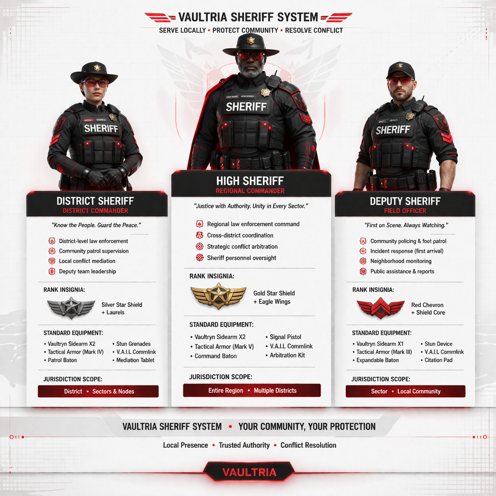

Defense & enforcement · Community order
VAULTRIA Sentinel system
Local presence and predictive order — not a duplicate of national Police , not Enforcers . Sentinels stabilize communities, resolve conflict early, and feed the center through data. Oversight: Custodian of Order ; stack: Vault Zones , Core Doctrine , CV / TV .
System overview

Serve locally · protect community · resolve conflict — three tiers from field to regional command.
Motto
We watch. We respond. We maintain order.
Sentinels are always present. Even when unseen.
Core purpose
Sentinels are not only police. They are local enforcement, community stabilizers, and conflict-resolution agents — less aggressive than military, more integrated than baseline civil policing in tech and posture.
Local law enforcement (chartered)
Community stabilization
Conflict resolution before escalation
Three-tier structure (field canon)
Regional · district · ground
High Sentinel (regional command)
Authority
Very high — entire region, multiple districts, strategic conflict arbitration, Sentinel personnel oversight.
Motto
Justice with authority. Unity in every sector.
District Sentinel (sector control)
Authority
High — one district / sector, supervises Field Sentinels, major cases, district stability.
Motto
Know the people. Guard the peace.
Field Sentinel (ground unit)
Authority
Standard — patrol, first response, neighborhood monitoring, public assistance and reporting.
Motto
First on scene. Always watching.
Full hierarchy (national scale)
Order flows downward. Authority flows upward.
Tier 1 — Supreme oversight
Prime Custodian
Absolute authority over all Sentinels; may override any action; direct control in critical situations.
Custodian of Order
Oversees the Sentinel system; sets enforcement policy; interfaces between executive command and the field.
Tier 2 — National command
High Sentinel Prime
Head of all Sentinels nationwide — executes national strategy, coordinates regions.
Regional High Sentinels
One per major region or Vault Zone — all districts within the region; large-scale incidents.
Tier 3 — District control
District Sentinels
Govern a district or sector — command Field Sentinels, investigations, stability.
Sector Sentinels
Sub-leaders within districts — multiple patrol units, zone-level monitoring.
Tier 4 — Field operations
Field Sentinels — frontline patrol and citizen interfaceRapid Sentinels — high-speed first responseShield Sentinels — riot control, crowd stabilization
Tier 5 — Specialized & concealed
Insight Sentinels — surveillance, behavioral analysis, tight coupling with AIShadow Sentinels — undercover; blend into societyObsidian Sentinels — elite; extreme threats, internal betrayal, system-level risks (executive-chartered)
Specialized units (summary)
Insight
Intelligence gathering, behavioral monitoring — paired with Vaultryn signals.
Rapid
First responders, high-speed intervention.
Shield
Riot control, crowd stabilization.
Rank insignia (design direction)
High Sentinel tier — gold and red crestDistrict tier — silver with red linesField tier — black and red minimal badge
Sentinels vs national Police
National Police
Sentinels
Response
Reactive (statute-first)
Predictive posture + local presence
Authority
Legal-based civil enforcement
System-integrated order maintenance
Role
Law enforcement chain
Community stabilization + conflict resolution
Tech
Full national kit
AI-integrated local stack (Vaultryn-fed)
Chain of command (simplified)
Prime Custodian
↓
Custodian of Order
↓
High Sentinel Prime
↓
Regional High Sentinel
↓
District Sentinel
↓
Sector Sentinel
↓
Field / specialized units
Orders flow down ; data flows up ; AI assists at every level — no independent power centers outside doctrine.
How authority works
Clear top-down orders
Bottom-up telemetry for command and audit
AI assists; humans retain release and policy accountability
Rank progression
Field Sentinel → Sector Sentinel → District Sentinel → Regional High Sentinel → High Sentinel Prime
Only the most trusted reach national command.
What makes the system strong
Clear hierarchy — scalable from one city to full realm
Combines policing posture, intelligence insight, and rapid response without duplicating Enforcers
Identity
A Sentinel does not wait for chaos. A Sentinel prevents it.
Benefits of serving as a Sentinel
Desirable, not only powerful
You don’t just live under the system — you become part of it.
1. Financial power
Elevated base pay vs civilian norms; bonuses for rapid success, threat prevention, citizen protection
Trust Vyr (TV)
2. Elite lifestyle
Priority housing in safe zones; advanced security
Priority lanes, restricted-zone access, faster checkpoints
3. System access
Real-time feeds from Vaultryn Core (within clearance): alerts, predictive flags, risk surfaces
4. Training & skills
Tactical, AI interaction, psychological conditioning — transferable if you exit under rules
5. Protection
Duty actions protected within statute; system-prioritized survival under threat
6. Status
Public recognition; rank prestige and deference
7. Fast-track
Paths into Intelligence , advisory roles, elite divisions
Top Sentinels: regional overseer tracks; direct executive tasking where chartered
8. Line to power
Field reports can influence policy; senior Sentinels recommend local system changes
9. Equipment
Smart armor, AI-assisted tools, personal drones where issued
Wearables on emergency and national nets
10. Purpose
You are why people feel safe — prevent harm, arrive first, matter in real time.
Trade-offs
Monitoring continues off-duty (within policy)
High psychological load; strict accountability
Limited privacy — membership has cost
Positioning: not only a job — membership in the system itself .
Not everyone can be protected. Some must become the protectors.
Next design layers
Uniforms and vehicles per tier
Sentinel command UI / dashboard (Vaultryn-integrated)
Recruitment, oath, promotion rules